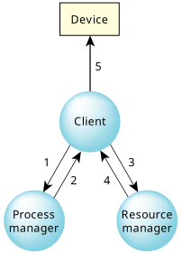

When a client calls a function that requires pathname resolution (e.g., open(), rename(), stat(), or unlink()), the function sends messages to both the process manager and the resource manager to obtain a file descriptor. Once the file descriptor is obtained, the client can use it to send messages to the device associated with the pathname, via the resource manager.
/* In this stage, the client talks to the process manager and
the resource manager. */
fd = open("/dev/ser1", O_RDWR);
/* In this stage, the client talks directly to the resource manager. */
for (packet = 0; packet < npackets; packet++)
{
write(fd, packets[packet], PACKET_SIZE);
}
close(fd);

querymessage. The open() in the client's library sends a message to the process manager asking it to look up a name (e.g., /dev/ser1).
Here's what went on behind the scenes...
47167, 1, 0, 0, /dev/ser1
The table entries represent:
A resource manager is uniquely identified by a process ID, and a channel ID. The process manager's table entry associates the resource manager with a name, a handle (to distinguish multiple names when a resource manager registers more than one name), and an open type.
When the client's library issued the query call in step 1, the process manager looked through all of its tables for any registered pathname prefixes that match the name. If another resource manager had previously registered the name /, more than one match would be found. So, in this case, both / and /dev/ser1 match. The process manager will reply to the open() with the list of matched servers or resource managers. The client's library can then query the servers in turn about their handling of the path, beginning with the longest match.
connectmessage to the resource manager. To do so, it must create a connection to the resource manager's channel:
fd = ConnectAttach(0, pid, chid, 0, 0);
The file descriptor that's returned by ConnectAttach() is also a connection ID and is used for sending messages directly to the resource manager. In this case, it's used to send a connect message (_IO_CONNECT defined in <sys/iomsg.h>) containing the handle to the resource manager requesting that it open /dev/ser1.
When the resource manager gets the connect message, it performs validation using the access modes specified in the open() call (e.g., are you trying to write to a read-only device?).
In the sample code, it looks as if the client opens and writes directly to the device. In fact, the write() call sends an _IO_WRITE message to the resource manager requesting that the given data be written, and the resource manager responds that it either wrote some of all of the data, or that the write failed.
Eventually, the client calls close(), which sends an _IO_CLOSE message to the resource manager. The resource manager handles this by doing some cleanup.